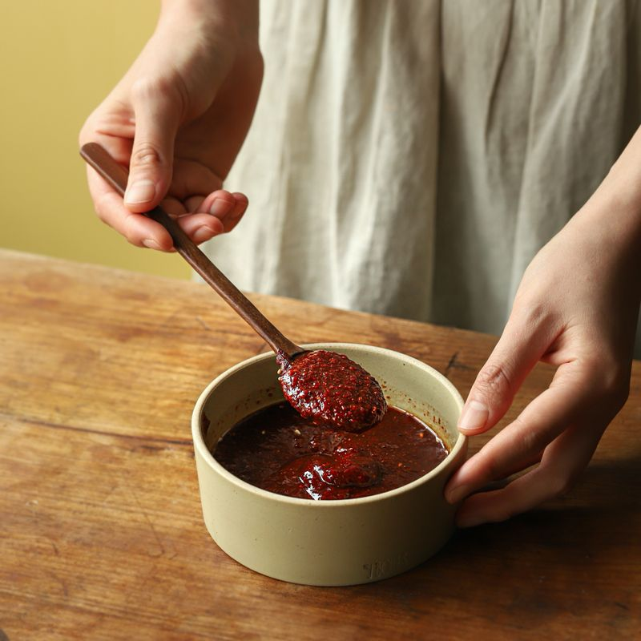
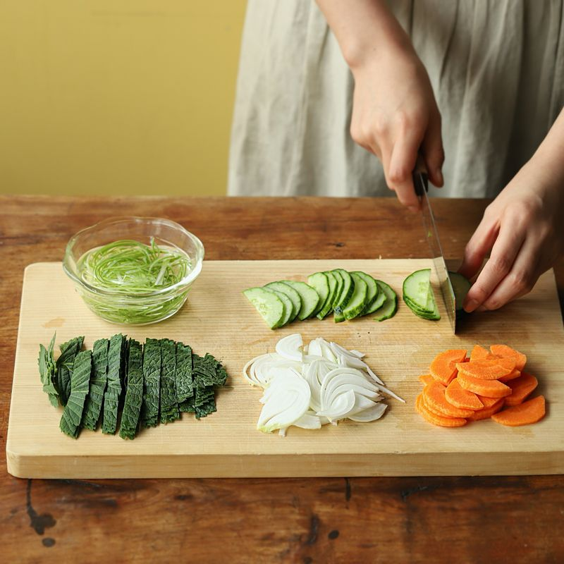
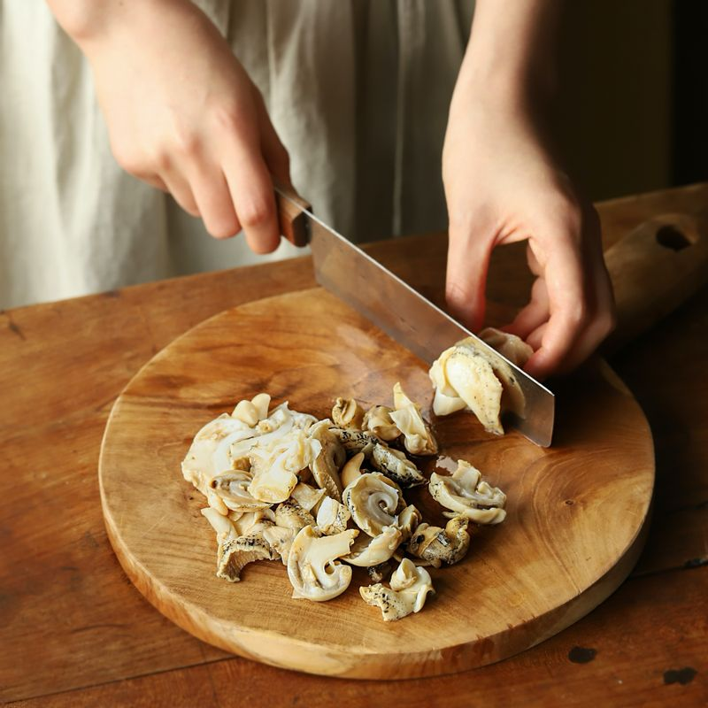
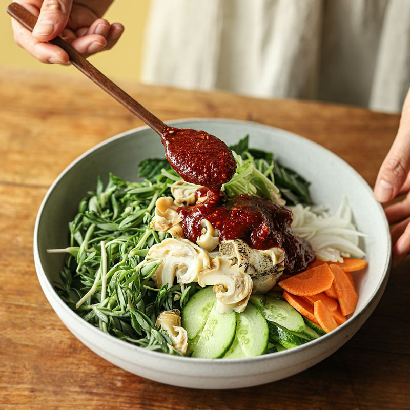
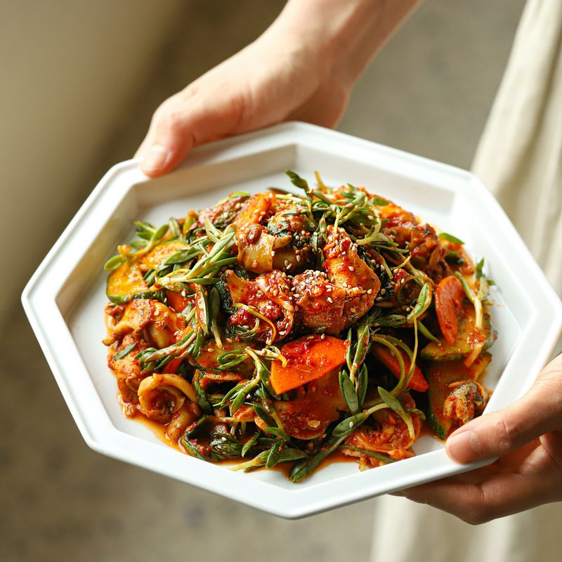

-

볼에 양념 재료를 넣고 섞어 양념장을 만들어주세요.
-

돌나물은 손질한 후 깨끗하게 씻어 물기를 빼고 깻잎, 양파, 대파는 채를 썰어주세요. (대파 채는 찬물에 담갔다가 물기를 빼주세요) 오이와 당근은 길이로 반 갈라 어슷하게 슬라이스 해 주세요.
-

골뱅이는 체에 밭쳐 물기를 빼고 길이로 이등분해주세요.
-

볼에 골뱅이와 돌나물, 손질한 야채, 양념장을 넣고 섞어주세요.
-

접시에 돌나물 골뱅이무침을 올린 후 통깨를 뿌리고 기호에 따라 삶은 소면을 곁들여 맛있게 즐겨주세요.